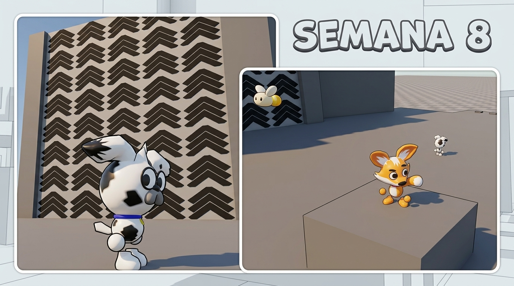
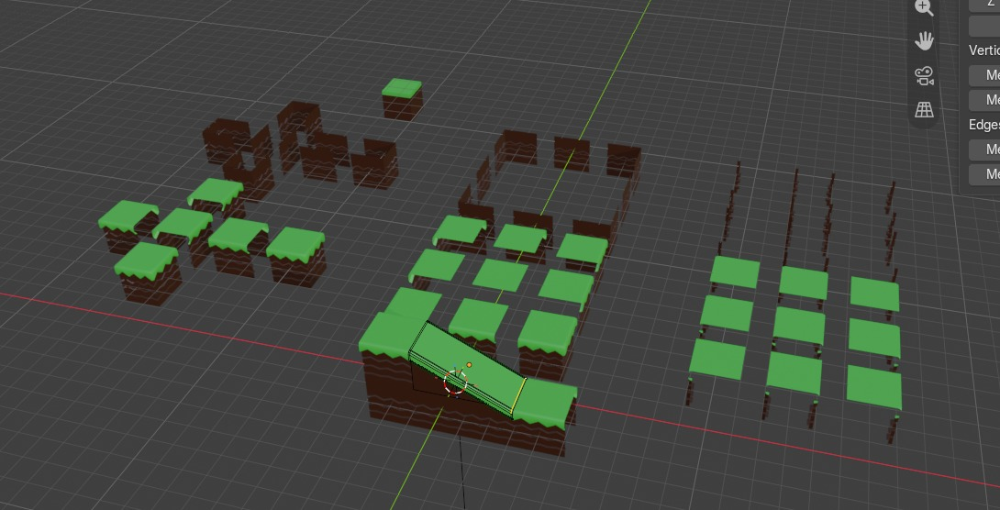
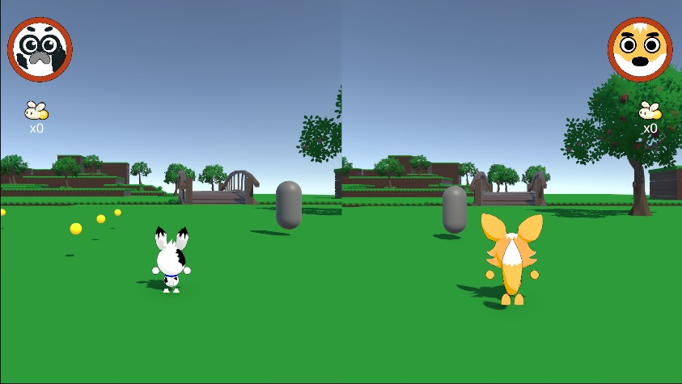
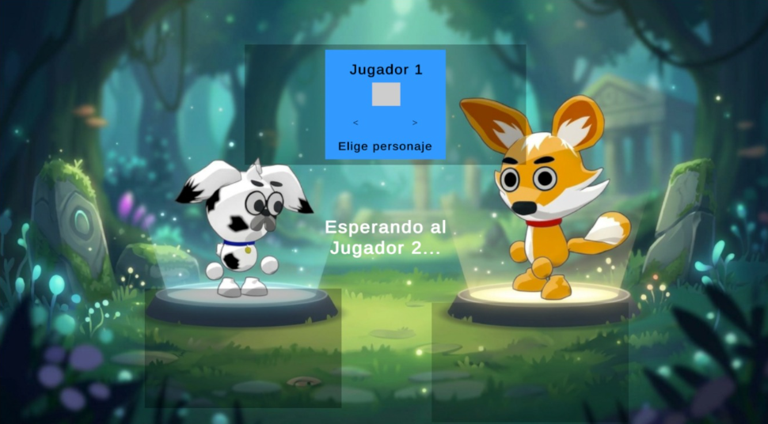

BITÁCORA DE DESARROLLO
Semana 10
Mejoras visuales y nuevas mecánicas
Durante esta semana continuamos desarrollando Paw Team, mejorando la apariencia del escenario, la interfaz y diferentes mecánicas para acercarnos a una versión más completa del juego.

¿Qué queríamos lograr?
El objetivo principal de esta semana fue avanzar en los requerimientos necesarios para preparar el video teaser de Paw Team y seguir mejorando el estado general del juego. Nos enfocamos especialmente en dejar atrás el graybox, incorporando colores, modelos y elementos visuales que nos permitieran tener una versión más cercana a lo que queremos conseguir.
También trabajamos en la interfaz, las mecánicas de muerte y recuperación, la recolección de Lumens y la selección de personajes. Estos avances nos permitieron darle más identidad al juego y continuar construyendo una experiencia que podamos mostrar en el teaser.
Tilemap 3D
Durante esta semana creamos en Blender un tilemap 3D que utilizaremos para construir las estructuras del escenario del bosque. Este conjunto de piezas nos permite diseñar y organizar diferentes partes del mapa de una manera más sencilla.
Gracias a este sistema podemos combinar las estructuras y adaptar el escenario según nuestras necesidades, facilitando la decoración del nivel y permitiéndonos modificar su distribución sin tener que crear cada elemento desde cero.

Interfaz y mapa
Utilizamos el tilemap para continuar construyendo la versión actual del mapa del bosque, incorporando las estructuras y los elementos visuales seleccionados. De esta manera, el escenario empieza a tener una apariencia más definida y deja atrás el aspecto básico del graybox.
También reorganizamos la interfaz para mostrar por separado las monedas de cada personaje. Los Lumens de Lupe aparecen en el lado izquierdo de la pantalla, mientras que los de Spike se muestran en el derecho. Así, cada jugador puede identificar con mayor facilidad sus propias monedas.
Además, reemplazamos la imagen provisional de Spike, que anteriormente tenía un tinte naranja, por su diseño actual. Este cambio ayuda a que la interfaz represente mejor la identidad visual de los personajes.

Muerte por caída al agua
Implementamos una mecánica para evitar que el personaje quede fuera del escenario cuando cae al agua. Al producirse la caída, el juego devuelve al personaje a la posición en la que se encontraba antes de caer, permitiéndole continuar desde una zona segura.
Con este comportamiento buscamos que los jugadores puedan recuperarse de una caída sin tener que reiniciar la partida y que el recorrido por el escenario sea más fluido.
Personaje derribado
También avanzamos en la mecánica que se activa cuando un enemigo derrota a uno de los personajes. Por ahora, como todavía estamos trabajando en el aspecto visual de los enemigos y en los detalles de esta interacción, el personaje derribado se representa mediante un cubo que indica su estado de herido.
En esta situación, el otro jugador debe acercarse al personaje derribado para ayudarlo a levantarse. De esta manera, comenzamos a implementar una mecánica que refuerza la cooperación y la importancia de apoyarse entre Lupe y Spike durante la partida.
Modelo y animación de Lumens
Durante esta semana mejoramos la apariencia de los Lumens, incorporándoles un modelo propio y una animación para que se integren mejor con el estilo visual de Paw Team.
En el video se puede observar cómo los personajes recogen estas monedas dentro del escenario. Por el momento, los Lumens permanecen estáticos en el mapa, por lo que su distribución y movimiento son aspectos que podremos seguir mejorando en futuras versiones.
Selección de personajes
Incorporamos una interfaz de selección de personajes en la que cada jugador puede escoger si quiere jugar como Lupe o como Spike. Con esta pantalla buscamos que ambos jugadores puedan elegir su personaje antes de comenzar la partida.
Este elemento también nos permite avanzar en la organización del flujo del juego, preparando la transición entre la selección de personajes y el inicio de la experiencia cooperativa.

Ferocan paso rápido
Retomamos el trabajo realizado anteriormente en el Ferocan paso rápido. En la revisión pasada ya contábamos con sus animaciones de prueba, pero todavía era necesario corregir y ajustar su rig para que el modelo pudiera moverse correctamente.
En esta versión logramos mejorar el rig e incorporar al enemigo dentro del juego con sus animaciones. Aunque todavía falta implementar y pulir su comportamiento, este avance nos acerca a tener enemigos funcionales dentro del escenario.
Resultado de la semana
Los avances de esta semana nos permitieron mejorar tanto la apariencia de Paw Team como algunas de sus mecánicas, acercándonos a una versión más completa para preparar el teaser.
¿Qué observamos o descubrimos?
Durante el desarrollo observamos que incorporar modelos, animaciones y colores ayuda a que el juego tenga una identidad visual más clara. También avanzamos en mecánicas importantes, como la recuperación de personajes y la recolección de Lumens, además de mejorar la interfaz para distinguir a los dos jugadores.
Sin embargo, todavía hay sistemas que necesitan más trabajo. El enemigo ya cuenta con sus animaciones, pero falta desarrollar su comportamiento, y algunas mecánicas todavía se encuentran en una fase inicial. Además, aunque el mapa tiene una apariencia más definida, aún necesitamos darle un propósito y organizar mejor el recorrido de los jugadores.
¿Qué cambiaremos en la siguiente versión?
- Implementaremos enemigos medianos y grandes para ampliar la variedad de desafíos dentro del juego.
- Puliremos las animaciones de los personajes, especialmente las relacionadas con estados como estar derribado y levantarse.
- Desarrollaremos el flujo de la partida, definiendo mejor cómo avanzan los jugadores y qué objetivos deben cumplir, para que el escenario no se sienta como un mundo vacío.